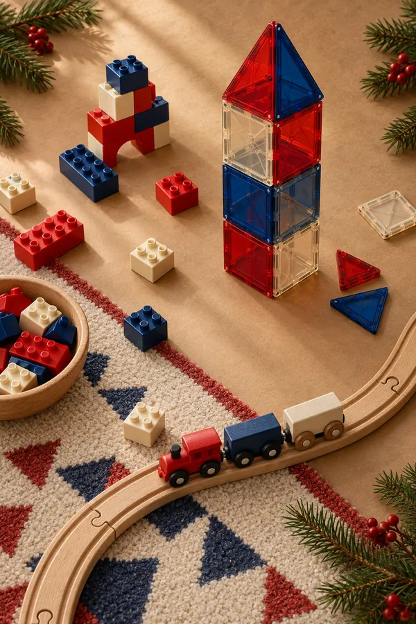

Toys kids actually play with after Christmas morning.
Hand-picked toys and gifts for babies, toddlers, big kids and tweens, sorted by age, interest and what you want to spend.

We have built this website with love, and thoughtfully procured these items for you. As Amazon Associates, we may earn a small amount from any qualifying purchases at no extra cost to you.
Gift Finder
Pick their age or what they love, then your budget. You'll get a short list right away.
As Amazon Associates, we earn from qualifying purchases.
Search all 119 gifts
The guides

Toys Under $25 Kids Actually Play With
Small price, big play value. These are the toys kids keep pulling out long after the wrapping paper is gone, and every one usually lands under $25.
Stocking Stuffers for Kids
Small, fun and not junk.
Best Gifts for Babies (0 to 12 Months)
Babies don't need much, but the right toy helps them grab, chew, look and learn.
Best Toys for Toddlers (Ages 1 to 2)
Toddlers want to push, stack, fill, dump and do it all again.
Best Toys for Preschoolers (Ages 3 to 4)
Preschoolers are all imagination.
Best Gifts for 5 to 7 Year Olds
Big imaginations and new skills.
Best Gifts for 8 to 10 Year Olds
Old enough for real projects, young enough to still love toys.
Best Gifts for Tweens (Ages 11 to 13)
Too old for toys, too young for grown-up stuff.
STEM and Science Toys Kids Love
Learning that doesn't feel like homework.
LEGO and Building Sets
Building toys are the gift that keeps on giving.
Arts and Crafts Gifts for Kids
For the kid who's always drawing, gluing or making something.
Outdoor and Active Toys
Toys that get kids moving and outside.
Screen-Free Games and Toys
Board games, puzzles and audio players that give kids a break from screens and bring the family together.
Gift Books Kids Will Actually Read
A book on Christmas morning is a gift that lasts.
Last-Minute Gifts for Kids That Still Arrive in Time
It's December 20th and you still need something.
Not sure which guide?
Use the 2-question Gift Finder.

How we pick
Every toy here has to pass three tests. Will they still play with it in March? Is it right for their age and safe? Will the parents be glad you bought it?
Each link opens Amazon's current options for that type of gift, so you can compare ratings, prices and delivery dates yourself.
Shop on time
- Nov 27Black Friday. Usually the best prices on big-ticket gifts.
- Nov 30Cyber Monday. Last round of the big deals.
- Mid-DecemberStandard shipping cutoffs start. Check the delivery date on every item.
- Dec 20 onGo to the last-minute guide for digital gifts and fast shipping.